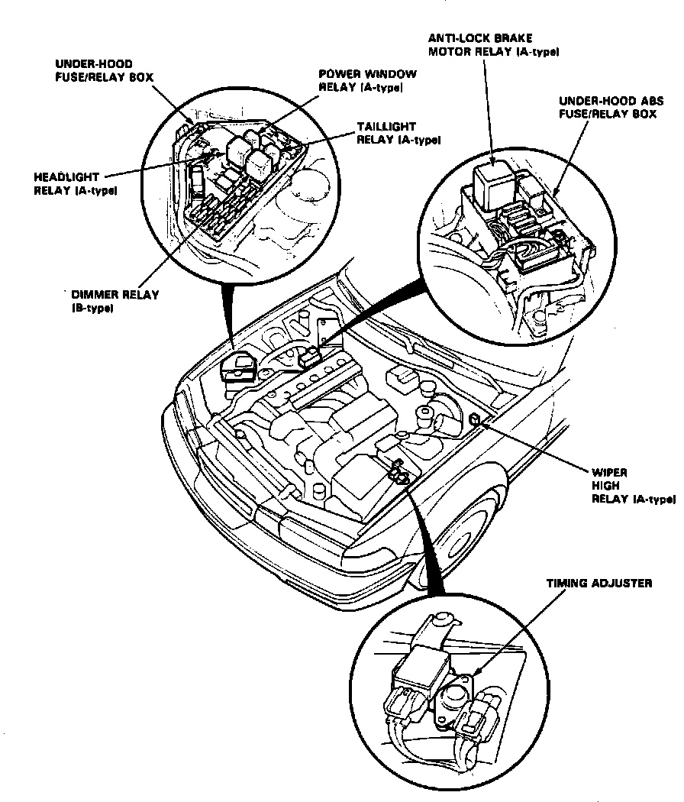

Operation CHARM
: Car repair manuals for everyone.
Home
>>
Acura
>>
1992
>>
Vigor L5-2451cc 2.5L SOHC G25A4 FI
>>
Repair and Diagnosis
>>
Relays and Modules
>>
Relays and Modules - Brakes and Traction Control
>>
Brake Fluid Pump Relay
>>
Locations
Brake Fluid Pump Relay: Locations
Engine Compartment Relays:

In Underhood ABS Fuse/Relay Box